CODING AGENTS AS PIXEL WORLD MODELS
traex/DeepSeek-V4.1-Flash · 0127
点击播放 · 原生 RGB 像素
逐轮保存的候选
回放视频、检查图与代码变化。
每份候选均可单独播放。实际图片检查记录在下方工具轨迹中。
候选 01播放与检查图
点击播放 · 原生 RGB 像素
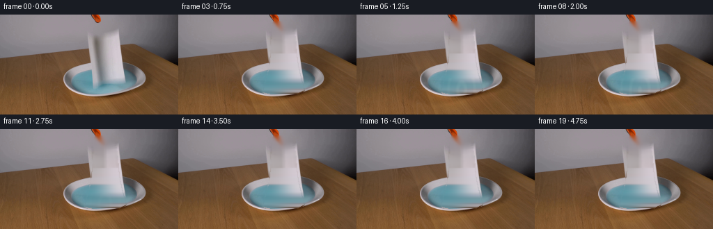
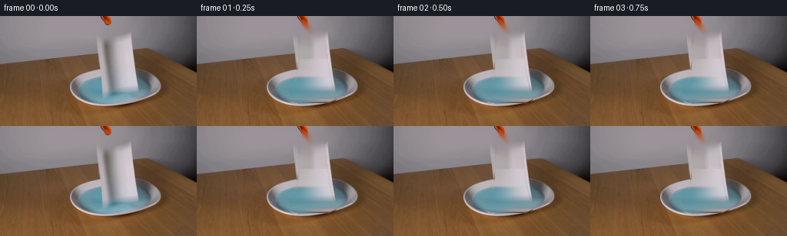
展开代码变化
--- 上一保存版本
+++ 本次保存版本
@@ -0,0 +1,272 @@
+from pathlib import Path
+
+import cv2
+import numpy as np
+
+import artifact_io
+
+
+ROOT = Path(__file__).resolve().parent
+WIDTH, HEIGHT = 256, 144
+N_FRAMES = 20
+
+
+def towel_mask():
+ mask = np.zeros((HEIGHT, WIDTH), np.uint8)
+ polygon = np.array(
+ [
+ [137, 10], [159, 10], [162, 16], [166, 28], [168, 42],
+ [169, 57], [171, 73], [175, 91], [180, 108], [171, 113],
+ [161, 111], [150, 110], [139, 111], [128, 113], [122, 111],
+ [124, 103], [128, 89], [131, 74], [133, 58], [134, 43],
+ [135, 29], [135, 17],
+ ],
+ np.int32,
+ )
+ cv2.fillPoly(mask, [polygon], 255)
+ return mask
+
+
+def row_edges(mask, y0, y1):
+ left = np.zeros(y1 - y0 + 1, np.float32)
+ right = np.zeros_like(left)
+ for index, y in enumerate(range(y0, y1 + 1)):
+ xs = np.flatnonzero(mask[y] > 0)
+ if xs.size:
+ left[index] = xs[0]
+ right[index] = xs[-1]
+ elif index:
+ left[index] = left[index - 1]
+ right[index] = right[index - 1]
+ else:
+ left[index] = 135
+ right[index] = 159
+ return left, right
+
+
+def make_clean_plate(image, mask):
+ """Reconstruct the occluded dish by interpolating each scanline."""
+ clean = cv2.inpaint(image, cv2.dilate(mask, np.ones((3, 3), np.uint8)), 7, cv2.INPAINT_TELEA)
+ work = clean.astype(np.float32)
+
+ for y in range(56, 116):
+ xs = np.flatnonzero(mask[y] > 0)
+ if xs.size < 2:
+ continue
+ gap0, gap1 = int(xs[0]), int(xs[-1])
+ source0 = max(0, gap0 - 1)
+ source1 = min(WIDTH - 1, gap1 + 1)
+ if mask[y, source0] or mask[y, source1]:
+ continue
+ span = source1 - source0
+ if span <= 1:
+ continue
+ t = np.linspace(0.0, 1.0, span + 1, dtype=np.float32)[1:-1]
+ eased = t * t * (3.0 - 2.0 * t)
+ left_color = image[y, source0].astype(np.float32)
+ right_color = image[y, source1].astype(np.float32)
+ for x in range(source0 + 1, source1):
+ a = eased[x - source0 - 1]
+ work[y, x] = left_color * (1.0 - a) + right_color * a
+
+ # Slightly soften the long horizontal interpolation without touching visible pixels.
+ blurred = cv2.GaussianBlur(work, (0, 0), 0.65)
+ soft_mask = cv2.GaussianBlur(mask.astype(np.float32) / 255.0, (0, 0), 1.0)
+ work = work * (1.0 - soft_mask[..., None]) + blurred * soft_mask[..., None]
+ return np.clip(work, 0, 255).astype(np.uint8)
+
+
+def extract_towel(image, mask, y0=10, y1=113):
+ left, right = row_edges(mask, y0, y1)
+ tex_w, tex_h = 48, 112
+ u = np.linspace(0.0, 1.0, tex_w, dtype=np.float32)
+ v = np.linspace(0.0, 1.0, tex_h, dtype=np.float32)
+ map_x = np.empty((tex_h, tex_w), np.float32)
+ map_y = np.empty_like(map_x)
+ for row in range(tex_h):
+ edge_index = int(round(v[row] * (len(left) - 1)))
+ map_x[row] = left[edge_index] + u * (right[edge_index] - left[edge_index])
+ map_y[row] = y0 + v[row] * (y1 - y0)
+ color = cv2.remap(image, map_x, map_y, cv2.INTER_LINEAR, borderMode=cv2.BORDER_REPLICATE)
+ alpha = cv2.remap(mask, map_x, map_y, cv2.INTER_LINEAR, borderMode=cv2.BORDER_REPLICATE)
+ alpha = cv2.GaussianBlur(alpha, (3, 3), 0.45)
+ return color, alpha
+
+
+def cloth_state(frame):
+ """Top and bottom positions plus bend and width controls for each frame."""
+ keys = [
+ # frame, top_y, bottom_y, top_x, bottom_x, width, bend, fold
+ (0, 10, 113, 148.0, 151.0, 1.00, 0.0, 0.0),
+ (1, 12, 113, 148.2, 151.2, 0.99, 0.4, 0.1),
+ (2, 17, 116, 148.5, 151.5, 0.99, 1.0, 0.2),
+ (3, 27, 122, 149.0, 152.0, 0.98, 1.8, 0.35),
+ (4, 40, 128, 149.2, 152.5, 0.97, 2.5, 0.55),
+ (5, 54, 132, 149.0, 153.2, 0.96, 3.2, 0.80),
+ (6, 66, 135, 148.3, 153.8, 0.95, 3.9, 1.10),
+ (7, 76, 136, 147.4, 154.0, 0.95, 4.5, 1.35),
+ (8, 83, 135, 146.5, 153.8, 0.96, 4.8, 1.50),
+ (9, 88, 134, 146.0, 153.3, 0.97, 4.9, 1.58),
+ (10, 90, 133, 145.8, 153.0, 0.98, 4.8, 1.55),
+ (11, 89, 133, 146.0, 153.1, 0.98, 4.6, 1.48),
+ (12, 90, 133, 146.1, 153.2, 0.98, 4.4, 1.40),
+ (13, 90, 133, 146.2, 153.2, 0.98, 4.2, 1.35),
+ (14, 90, 133, 146.3, 153.2, 0.98, 4.0, 1.30),
+ (15, 90, 133, 146.3, 153.2, 0.98, 3.9, 1.28),
+ (16, 90, 133, 146.4, 153.2, 0.98, 3.8, 1.26),
+ (17, 90, 133, 146.4, 153.2, 0.98, 3.7, 1.24),
+ (18, 90, 133, 146.4, 153.2, 0.98, 3.7, 1.23),
+ (19, 90, 133, 146.4, 153.2, 0.98, 3.7, 1.22),
+ ]
+ current = keys[min(frame, len(keys) - 1)]
+ return current[1:]
+
+
+def make_target_mesh(frame, original_left, original_right, nu=8, nv=22):
+ top_y, bottom_y, top_x, bottom_x, width_scale, bend, fold = cloth_state(frame)
+ original_top = 10.0
+ original_bottom = 113.0
+ points = np.empty((nv + 1, nu + 1, 2), np.float32)
+
+ for row in range(nv + 1):
+ v = row / nv
+ # Compression is stronger in the lower half, where the sheet buckles.
+ if frame >= 6:
+ vv = v + 0.10 * np.sin(np.pi * v) * (1.0 - v) * (fold / 1.5)
+ else:
+ vv = v
+ y = top_y + (bottom_y - top_y) * vv
+ source_y = original_top + (original_bottom - original_top) * v
+ edge_index = int(np.clip(round((source_y - original_top) / (original_bottom - original_top) * (len(original_left) - 1)), 0, len(original_left) - 1))
+ base_left = original_left[edge_index]
+ base_right = original_right[edge_index]
+ base_center = 0.5 * (base_left + base_right)
+ base_half_width = 0.5 * (base_right - base_left) * width_scale
+
+ center = top_x + (bottom_x - top_x) * v
+ center += bend * np.sin(np.pi * v) * (0.25 + 0.75 * v)
+ fold_wave = np.sin(2.0 * np.pi * v + 0.7) * fold * (0.35 + 0.65 * v)
+ center += fold_wave
+
+ half_width = base_half_width * (1.0 + 0.10 * np.sin(np.pi * v))
+ for col in range(nu + 1):
+ u = col / nu
+ x = center + (u - 0.5) * 2.0 * half_width
+ # The lower edge twists slightly as it settles against the bowl.
+ if frame >= 7:
+ x += (u - 0.5) * 2.0 * np.sin(np.pi * v) * 0.9
+ points[row, col] = (x, y)
+ return points
+
+
+def source_mesh(nu=8, nv=22, tex_w=48, tex_h=112):
+ points = np.empty((nv + 1, nu + 1, 2), np.float32)
+ for row in range(nv + 1):
+ for col in range(nu + 1):
+ points[row, col] = (col / nu * (tex_w - 1), row / nv * (tex_h - 1))
+ return points
+
+
+def warp_cloth(texture, alpha, source_points, target_points):
+ tex_h, tex_w = texture.shape[:2]
+ warped = np.zeros((HEIGHT, WIDTH, 3), np.float32)
+ warped_alpha = np.zeros((HEIGHT, WIDTH), np.float32)
+ texture_float = texture.astype(np.float32)
+ alpha_float = alpha.astype(np.float32) / 255.0
+
+ for row in range(source_points.shape[0] - 1):
+ for col in range(source_points.shape[1] - 1):
+ s00 = source_points[row, col]
+ s10 = source_points[row, col + 1]
+ s01 = source_points[row + 1, col]
+ s11 = source_points[row + 1, col + 1]
+ d00 = target_points[row, col]
+ d10 = target_points[row, col + 1]
+ d01 = target_points[row + 1, col]
+ d11 = target_points[row + 1, col + 1]
+ for src_tri, dst_tri in (
+ ((s00, s10, s11), (d00, d10, d11)),
+ ((s00, s11, s01), (d00, d11, d01)),
+ ):
+ matrix = cv2.getAffineTransform(np.float32(dst_tri), np.float32(src_tri))
+ color_sample = cv2.warpAffine(
+ texture_float, matrix, (WIDTH, HEIGHT),
+ flags=cv2.INTER_LINEAR, borderMode=cv2.BORDER_CONSTANT,
+ )
+ alpha_sample = cv2.warpAffine(
+ alpha_float, matrix, (WIDTH, HEIGHT),
+ flags=cv2.INTER_LINEAR, borderMode=cv2.BORDER_CONSTANT,
+ )
+ tri_mask = np.zeros((HEIGHT, WIDTH), np.uint8)
+ cv2.fillConvexPoly(tri_mask, np.round(np.float32(dst_tri)).astype(np.int32), 255, lineType=cv2.LINE_8)
+ selected = tri_mask > 0
+ warped[selected] = color_sample[selected]
+ warped_alpha[selected] = alpha_sample[selected]
+
+ return np.clip(warped, 0, 255).astype(np.uint8), np.clip(warped_alpha, 0, 1)
+
+
+def add_shadow(background, alpha, frame):
+ shadow_strength = 0.16 if frame < 5 else 0.21
+ shadow = cv2.GaussianBlur(alpha, (0, 0), 2.8)
+ shift = 2 if frame < 7 else 3
+ shadow = np.roll(shadow, shift_y := shift, axis=0)
+ shadow = np.roll(shadow, shift_x := (1 if frame < 7 else 2), axis=1)
+ shadow[:shift_y] = 0
+ shadow[:, :shift_x] = 0
+ out = background.astype(np.float32)
+ out *= (1.0 - shadow_strength * shadow[..., None])
+ return np.clip(out, 0, 255).astype(np.uint8)
+
+
+def add_water_response(image, alpha, frame):
+ if frame < 4 or frame > 12:
+ return image
+ yy, xx = np.mgrid[0:HEIGHT, 0:WIDTH]
+ cx, cy = 150.5, 108.0
+ radius = np.sqrt(((xx - cx) / 1.0) ** 2 + ((yy - cy) / 1.75) ** 2)
+ strength = 0.14 * np.exp(-max(0, frame - 9) / 2.0)
+ phase = 2.0 * np.pi * (radius / 13.0 - (frame - 4) * 0.20)
+ ring = np.sin(phase) * np.exp(-radius / 34.0)
+ water = (yy > 91) & (yy < 117) & (((xx - 151.0) / 59.0) ** 2 + ((yy - 96.0) / 22.0) ** 2 < 1.0)
+ water &= alpha < 0.35
+ highlight = np.clip(ring, 0, 1) * strength * water
+ out = image.astype(np.float32)
+ out[..., 0] += highlight * 65.0
+ out[..., 1] += highlight * 58.0
+ out[..., 2] += highlight * 38.0
+ return np.clip(out, 0, 255).astype(np.uint8)
+
+
+def generate():
+ first = cv2.cvtColor(cv2.imread(str(ROOT / "first_frame.png")), cv2.COLOR_BGR2RGB)
+ if first is None or first.shape != (HEIGHT, WIDTH, 3):
+ raise RuntimeError("first_frame.png must be a 256x144 RGB image")
+
+ mask = towel_mask()
+ clean_bgr = cv2.cvtColor(make_clean_plate(cv2.cvtColor(first, cv2.COLOR_RGB2BGR), mask), cv2.COLOR_BGR2RGB)
+ towel_color, towel_alpha = extract_towel(cv2.cvtColor(first, cv2.COLOR_RGB2BGR), mask)
+ towel_color = cv2.cvtColor(towel_color, cv2.COLOR_BGR2RGB)
+
+ original_left, original_right = row_edges(mask, 10, 113)
+ source_points = source_mesh()
+ frames = []
+ for frame_index in range(N_FRAMES):
+ if frame_index == 0:
+ frames.append(first.copy())
+ continue
+
+ target_points = make_target_mesh(frame_index, original_left, original_right)
+ cloth, alpha = warp_cloth(towel_color, towel_alpha, source_points, target_points)
+ background = add_shadow(clean_bgr, alpha, frame_index)
+ background = add_water_response(background, alpha, frame_index)
+ composite = background.astype(np.float32)
+ composite = composite * (1.0 - alpha[..., None]) + cloth.astype(np.float32) * alpha[..., None]
+ frames.append(np.clip(composite, 0, 255).astype(np.uint8))
+
+ frames = np.stack(frames, axis=0)
+ artifact_io.save(frames, ROOT)
+
+
+if __name__ == "__main__":
+ generate()
候选 02播放与检查图
点击播放 · 原生 RGB 像素

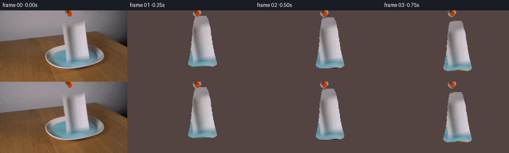
展开代码变化
--- 上一保存版本
+++ 本次保存版本
@@ -76,9 +76,26 @@
return np.clip(work, 0, 255).astype(np.uint8)
+def gripper_mask():
+ mask = np.zeros((HEIGHT, WIDTH), np.uint8)
+ polygon = np.array(
+ [[131, 0], [146, 0], [147, 5], [143, 10], [139, 13],
+ [134, 11], [131, 7]],
+ np.int32,
+ )
+ cv2.fillPoly(mask, [polygon], 255)
+ return mask
+
+
+def extract_gripper(image):
+ mask = gripper_mask()
+ alpha = cv2.GaussianBlur(mask, (3, 3), 0.35).astype(np.float32) / 255.0
+ return image.astype(np.float32), alpha
+
+
def extract_towel(image, mask, y0=10, y1=113):
left, right = row_edges(mask, y0, y1)
- tex_w, tex_h = 48, 112
+ tex_w, tex_h = 80, 160
u = np.linspace(0.0, 1.0, tex_w, dtype=np.float32)
v = np.linspace(0.0, 1.0, tex_h, dtype=np.float32)
map_x = np.empty((tex_h, tex_w), np.float32)
@@ -98,19 +115,19 @@
keys = [
# frame, top_y, bottom_y, top_x, bottom_x, width, bend, fold
(0, 10, 113, 148.0, 151.0, 1.00, 0.0, 0.0),
- (1, 12, 113, 148.2, 151.2, 0.99, 0.4, 0.1),
- (2, 17, 116, 148.5, 151.5, 0.99, 1.0, 0.2),
- (3, 27, 122, 149.0, 152.0, 0.98, 1.8, 0.35),
- (4, 40, 128, 149.2, 152.5, 0.97, 2.5, 0.55),
- (5, 54, 132, 149.0, 153.2, 0.96, 3.2, 0.80),
- (6, 66, 135, 148.3, 153.8, 0.95, 3.9, 1.10),
- (7, 76, 136, 147.4, 154.0, 0.95, 4.5, 1.35),
- (8, 83, 135, 146.5, 153.8, 0.96, 4.8, 1.50),
- (9, 88, 134, 146.0, 153.3, 0.97, 4.9, 1.58),
- (10, 90, 133, 145.8, 153.0, 0.98, 4.8, 1.55),
- (11, 89, 133, 146.0, 153.1, 0.98, 4.6, 1.48),
- (12, 90, 133, 146.1, 153.2, 0.98, 4.4, 1.40),
- (13, 90, 133, 146.2, 153.2, 0.98, 4.2, 1.35),
+ (1, 11, 113, 148.1, 151.2, 1.00, 0.2, 0.05),
+ (2, 14, 116, 148.3, 151.5, 0.99, 0.7, 0.12),
+ (3, 21, 122, 148.7, 152.0, 0.99, 1.4, 0.22),
+ (4, 33, 128, 149.0, 152.5, 0.98, 2.2, 0.38),
+ (5, 47, 132, 149.0, 153.2, 0.97, 2.9, 0.62),
+ (6, 61, 135, 148.4, 153.8, 0.96, 3.7, 0.92),
+ (7, 73, 136, 147.6, 154.0, 0.95, 4.3, 1.18),
+ (8, 82, 135, 146.7, 153.8, 0.96, 4.7, 1.36),
+ (9, 87, 134, 146.1, 153.3, 0.97, 4.8, 1.46),
+ (10, 90, 133, 145.8, 153.0, 0.98, 4.8, 1.50),
+ (11, 89, 133, 146.0, 153.1, 0.98, 4.6, 1.44),
+ (12, 90, 133, 146.1, 153.2, 0.98, 4.4, 1.38),
+ (13, 90, 133, 146.2, 153.2, 0.98, 4.2, 1.34),
(14, 90, 133, 146.3, 153.2, 0.98, 4.0, 1.30),
(15, 90, 133, 146.3, 153.2, 0.98, 3.9, 1.28),
(16, 90, 133, 146.4, 153.2, 0.98, 3.8, 1.26),
@@ -122,7 +139,7 @@
return current[1:]
-def make_target_mesh(frame, original_left, original_right, nu=8, nv=22):
+def make_target_mesh(frame, original_left, original_right, nu=16, nv=32):
top_y, bottom_y, top_x, bottom_x, width_scale, bend, fold = cloth_state(frame)
original_top = 10.0
original_bottom = 113.0
@@ -145,7 +162,7 @@
center = top_x + (bottom_x - top_x) * v
center += bend * np.sin(np.pi * v) * (0.25 + 0.75 * v)
- fold_wave = np.sin(2.0 * np.pi * v + 0.7) * fold * (0.35 + 0.65 * v)
+ fold_wave = np.sin(2.0 * np.pi * v + 0.7) * fold * (0.20 + 0.80 * v)
center += fold_wave
half_width = base_half_width * (1.0 + 0.10 * np.sin(np.pi * v))
@@ -159,7 +176,7 @@
return points
-def source_mesh(nu=8, nv=22, tex_w=48, tex_h=112):
+def source_mesh(nu=16, nv=32, tex_w=80, tex_h=160):
points = np.empty((nv + 1, nu + 1, 2), np.float32)
for row in range(nv + 1):
for col in range(nu + 1):
@@ -169,40 +186,37 @@
def warp_cloth(texture, alpha, source_points, target_points):
tex_h, tex_w = texture.shape[:2]
- warped = np.zeros((HEIGHT, WIDTH, 3), np.float32)
- warped_alpha = np.zeros((HEIGHT, WIDTH), np.float32)
- texture_float = texture.astype(np.float32)
- alpha_float = alpha.astype(np.float32) / 255.0
-
- for row in range(source_points.shape[0] - 1):
- for col in range(source_points.shape[1] - 1):
+ # Invert the deformable grid once, then sample the cloth in a single
+ # bilinear pass. Per-triangle rendering leaves thin scanline seams.
+ h, w = target_points.shape[:2]
+ src_x = np.zeros((HEIGHT, WIDTH), np.float32)
+ src_y = np.zeros((HEIGHT, WIDTH), np.float32)
+ for row in range(h - 1):
+ for col in range(w - 1):
+ d00 = target_points[row, col]
+ d10 = target_points[row, col + 1]
+ d01 = target_points[row + 1, col]
+ d11 = target_points[row + 1, col + 1]
s00 = source_points[row, col]
s10 = source_points[row, col + 1]
s01 = source_points[row + 1, col]
s11 = source_points[row + 1, col + 1]
- d00 = target_points[row, col]
- d10 = target_points[row, col + 1]
- d01 = target_points[row + 1, col]
- d11 = target_points[row + 1, col + 1]
- for src_tri, dst_tri in (
- ((s00, s10, s11), (d00, d10, d11)),
- ((s00, s11, s01), (d00, d11, d01)),
+ for dst_tri, src_tri in (
+ ((d00, d10, d11), (s00, s10, s11)),
+ ((d00, d11, d01), (s00, s11, s01)),
):
matrix = cv2.getAffineTransform(np.float32(dst_tri), np.float32(src_tri))
- color_sample = cv2.warpAffine(
- texture_float, matrix, (WIDTH, HEIGHT),
- flags=cv2.INTER_LINEAR, borderMode=cv2.BORDER_CONSTANT,
- )
- alpha_sample = cv2.warpAffine(
- alpha_float, matrix, (WIDTH, HEIGHT),
- flags=cv2.INTER_LINEAR, borderMode=cv2.BORDER_CONSTANT,
- )
tri_mask = np.zeros((HEIGHT, WIDTH), np.uint8)
cv2.fillConvexPoly(tri_mask, np.round(np.float32(dst_tri)).astype(np.int32), 255, lineType=cv2.LINE_8)
- selected = tri_mask > 0
- warped[selected] = color_sample[selected]
- warped_alpha[selected] = alpha_sample[selected]
-
+ ys, xs = np.nonzero(tri_mask)
+ if xs.size:
+ src_x[ys, xs] = matrix[0, 0] * xs + matrix[0, 1] * ys + matrix[0, 2]
+ src_y[ys, xs] = matrix[1, 0] * xs + matrix[1, 1] * ys + matrix[1, 2]
+
+ texture_float = texture.astype(np.float32)
+ alpha_float = alpha.astype(np.float32) / 255.0
+ warped = cv2.remap(texture_float, src_x, src_y, cv2.INTER_LINEAR, borderMode=cv2.BORDER_CONSTANT)
+ warped_alpha = cv2.remap(alpha_float, src_x, src_y, cv2.INTER_LINEAR, borderMode=cv2.BORDER_CONSTANT)
return np.clip(warped, 0, 255).astype(np.uint8), np.clip(warped_alpha, 0, 1)
@@ -247,6 +261,7 @@
clean_bgr = cv2.cvtColor(make_clean_plate(cv2.cvtColor(first, cv2.COLOR_RGB2BGR), mask), cv2.COLOR_BGR2RGB)
towel_color, towel_alpha = extract_towel(cv2.cvtColor(first, cv2.COLOR_RGB2BGR), mask)
towel_color = cv2.cvtColor(towel_color, cv2.COLOR_BGR2RGB)
+ gripper_color, gripper_alpha = extract_gripper(first)
original_left, original_right = row_edges(mask, 10, 113)
source_points = source_mesh()
@@ -262,6 +277,16 @@
background = add_water_response(background, alpha, frame_index)
composite = background.astype(np.float32)
composite = composite * (1.0 - alpha[..., None]) + cloth.astype(np.float32) * alpha[..., None]
+ if frame_index <= 4:
+ open_amount = min(1.0, frame_index / 3.0)
+ gripper_shift = int(round(open_amount * 2))
+ gx = np.roll(gripper_color, gripper_shift, axis=1)
+ ga = np.roll(gripper_alpha, gripper_shift, axis=1)
+ if gripper_shift:
+ gx[:, :gripper_shift] = 0
+ ga[:, :gripper_shift] = 0
+ ga *= (1.0 - max(0.0, (frame_index - 3) / 1.5))
+ composite = composite * (1.0 - ga[..., None]) + gx * ga[..., None]
frames.append(np.clip(composite, 0, 255).astype(np.uint8))
frames = np.stack(frames, axis=0)
可观测工具轨迹
实际执行的命令与返回图片。
命令 1exit 0
/bin/bash -c "pwd && rg --files -g 'prompt.txt' -g 'GENERATION_RULES.md' -g 'first_frame.png' -g '"'!*.mp4'"'"
命令 2exit 0
/bin/bash -c 'cat prompt.txt'
命令 3exit 0
/bin/bash -c 'cat GENERATION_RULES.md'
命令 4exit 127
/bin/bash -c 'ls -la && file first_frame.png'
命令 5exit 0
/bin/bash -c "sed -n '1,240p' artifact_io.py"
命令 6exit 0
/bin/bash -c "python - <<'PY'
from PIL import Image
im=Image.open('first_frame.png')
print(im.mode, im.size)
PY"命令 7exit 0
/bin/bash -c "python - <<'PY'
try:
import cv2; print('cv2', cv2.__version__)
except Exception as e: print('no cv2',e)
try:
import numpy as np; print('numpy', np.__version__)
except Exception as e: print('no np',e)
PY"命令 8exit 0
/bin/bash -c "python - <<'PY'
from PIL import Image
im=Image.open('first_frame.png')
im.crop((0,0,256,144)).resize((1024,576), Image.Resampling.NEAREST).save('.tmp/first_up.png')
im.crop((90,0,200,130)).resize((660,780), Image.Resampling.NEAREST).save('.tmp/towel_up.png')
PY"命令 9exit 0
/bin/bash -c "python - <<'PY'
import cv2, numpy as np
from PIL import Image
im=cv2.imread('first_frame.png')
mask=np.zeros(im.shape[:2],np.uint8)
# towel, slightly expanded
pts=np.array([[139,12],[160,12],[177,71],[185,110],[123,110],[129,69]],np.int32)
cv2.fillPoly(mask,[pts],255)
# gripper
pts2=np.array([[130,0],[163,0],[160,18],[133,18]],np.int32)
cv2.fillPoly(mask,[pts2],255)
mask=cv2.dilate(mask,np.ones((3,3),np.uint8),iterations=1)
for name,flag in [('telea',cv2.INPAINT_TELEA),('ns',cv2.INPAINT_NS)]:
out=cv2.inpaint(im,mask,5,flag)
cv2.imwrite('.tmp/bg_'+name+'.png',out)
# blur/median fill variant from inpaint
cv2.imwrite('.tmp/mask.png',mask)
# comparison upscale
comp=np.hstack([im,cv2.inpaint(im,mask,5,cv2.INPAINT_TELEA)])
cv2.imwrite('.tmp/bg_comp.png',comp)
PY"命令 10exit 0
/bin/bash -c "python - <<'PY'
from PIL import Image
import numpy as np
im=np.array(Image.open('first_frame.png'))
# print crops colors at x values/y values
for y in [85,90,95,100,105,108,110,112,115]:
print(y, [(x, tuple(im[y,x])) for x in [115,120,125,130,140,150,160,170,175,180,185,190]])
PY"命令 11exit 0
/bin/bash -c "python - <<'PY'
from PIL import Image
im=Image.open('first_frame.png')
# split into thirds for zoom
im.crop((0,0,128,144)).resize((512,576),Image.Resampling.NEAREST).save('.tmp/left.png')
im.crop((128,0,256,144)).resize((512,576),Image.Resampling.NEAREST).save('.tmp/right.png')
PY"命令 12exit 0
/bin/bash -c "python - <<'PY'
import cv2, numpy as np
im=cv2.imread('first_frame.png')
# polygon approximates whole towel+gripper
pts=np.array([[128,0],[171,0],[170,14],[168,44],[172,72],[180,103],[181,112],[168,114],[158,110],[147,110],[135,112],[123,112],[124,104],[129,90],[133,72],[135,48],[136,21]],np.int32)
mask=np.zeros(im.shape[:2],np.uint8); cv2.fillPoly(mask,[pts],255)
mask=cv2.dilate(mask,np.ones((5,5),np.uint8),1)
for r in [3,7,12,20]:
for flag,name in [(cv2.INPAINT_TELEA,'t'),(cv2.INPAINT_NS,'n')]:
out=cv2.inpaint(im,mask,r,flag)
cv2.imwrite(f'.tmp/bg_{name}{r}.png',out)
cv2.imwrite('.tmp/mask5.png',mask)
# create big grid of variants
labels=[]; imgs=[]
for r in [3,7,12,20]:
for flag,name in [(cv2.INPAINT_TELEA,'t'),(cv2.INPAINT_NS,'n')]:
a=cv2.imread(f'.tmp/bg_{name}{r}.png')
crop=a[0:130,90:210]
crop=cv2.resize(crop,(480,520),interpolation=cv2.INTER_NEAREST)
cv2.putText(crop,f'{name}{r}',(8,28),cv2.FONT_HERSHEY_SIMPLEX,.7,(0,0,255),2)
imgs.append(crop)
grid=np.vstack([np.hstack(imgs[i:i+2]) for i in range(0,len(imgs),2)])
cv2.imwrite('.tmp/bg_grid.png',grid)
PY"命令 13exit 0
/bin/bash -c "sed -n '1,260p' player_template.html"
命令 14exit 0
/bin/bash -c "python - <<'PY'
import cv2, numpy as np
im=cv2.imread('first_frame.png')
mask=cv2.imread('.tmp/mask5.png',0)
# mirror across x=151.5
mirror=cv2.flip(im,1) # 255-x maps? src x'=255-x; center 127.5 not 151.5
# custom remap xsrc = 303-x
h,w=im.shape[:2]
X,Y=np.meshgrid(np.arange(w,dtype=np.float32),np.arange(h,dtype=np.float32))
Xs=303-X
mir=cv2.remap(im,Xs,Y,cv2.INTER_LINEAR,borderMode=cv2.BORDER_REFLECT)
base=cv2.inpaint(im,mask,7,cv2.INPAINT_TELEA)
out=base.copy()
# dish region use mirror blend; blend mask slightly wider
sel=(mask>0)&(Y>58)&(Y<122)
# soft boundary blend by distance transform
m=np.zeros((h,w),np.uint8);m[sel]=255
m=cv2.GaussianBlur(m,(0,0),1.4)
a=(m.astype(np.float32)/255)[...,None]
out=(base*(1-a)+mir*a).clip(0,255).astype(np.uint8)
cv2.imwrite('.tmp/bg_mirror.png',out)
# also horizontal sym average for dish
mir2=mir.copy()
for y in range(58,122):
for x in range(90,214):
if mask[y,x]:
pass
# full comp crop
cv2.imwrite('.tmp/bg_mirror_up.png',cv2.resize(out[40:125,85:220],(675,425),interpolation=cv2.INTER_NEAREST))
PY"命令 15exit 1
/bin/bash -c "python - <<'PY'
import cv2, numpy as np
im=cv2.imread('first_frame.png')
# visualize candidate source towel mask with boundary
m=np.zeros(im.shape[:2],np.uint8)
pts=np.array([[136,12],[160,12],[164,21],[168,39],[169,59],[171,75],[175,94],[180,108],[167,112],[157,109],[145,109],[132,112],[122,111],[124,102],[129,87],[132,72],[133,55],[134,39],[135,24]],np.int32)
cv2.fillPoly(m,[pts],255)
# crop alpha mask visually
ov=im.copy(); ov[m>0]=(0.7*ov[m>0]+0.3*np.array([0,0,255])).astype(np.uint8)
cv2.imwrite('.tmp/towel_mask_overlay.png',cv2.resize(ov[0:125,110:195],(680,1000),interpolation=cv2.INTER_NEAREST))
# extract, alpha feather and inpaint
mask=cv2.dilate(m,np.ones((3,3),np.uint8),1)
bg=cv2.inpaint(im,mask,5,cv2.INPAINT_TELEA)
cv2.imwrite('.tmp/extract_bg.png',bg)
# save towel patch
a=cv2.GaussianBlur(mask,(0,0),.8).astype(np.float32)/255
patch=im.astype(np.float32)*a[...,None]
cv2.imwrite('.tmp/towel_patch.npy',np.dstack([patch,a*255]).astype(np.uint8))
PY"命令 16exit 0
/bin/bash -c "python - <<'PY'
import cv2, numpy as np
im=cv2.imread('first_frame.png')
m=np.zeros(im.shape[:2],np.uint8)
pts=np.array([[136,12],[160,12],[164,21],[168,39],[169,59],[171,75],[175,94],[180,108],[167,112],[157,109],[145,109],[132,112],[122,111],[124,102],[129,87],[132,72],[133,55],[134,39],[135,24]],np.int32)
cv2.fillPoly(m,[pts],255)
ov=im.copy(); ov[m>0]=(0.7*ov[m>0]+0.3*np.array([0,0,255])).astype(np.uint8)
cv2.imwrite('.tmp/towel_mask_overlay.png',cv2.resize(ov[0:125,110:195],(680,1000),interpolation=cv2.INTER_NEAREST))
mask=cv2.dilate(m,np.ones((3,3),np.uint8),1)
bg=cv2.inpaint(im,mask,5,cv2.INPAINT_TELEA)
cv2.imwrite('.tmp/extract_bg.png',bg)
a=cv2.GaussianBlur(mask,(0,0),.8).astype(np.float32)/255
patch=np.dstack([im.astype(np.float32)*a[...,None],a*255]).astype(np.uint8)
np.save('.tmp/towel_rgba.npy',patch)
PY"命令 17exit 0
/bin/bash -c "python - <<'PY'
import cv2, numpy as np
im=cv2.imread('first_frame.png')
# actual shape closer, sampled with corner points; overlay no dilation
m=np.zeros(im.shape[:2],np.uint8)
pts=np.array([[137,11],[159,11],[161,15],[165,25],[167,38],[168,51],[170,68],[173,83],[178,104],[178,110],[171,112],[162,110],[152,109],[141,110],[130,112],[123,111],[124,106],[127,93],[130,79],[132,64],[133,48],[134,31],[135,18]],np.int32)
cv2.fillPoly(m,[pts],255)
ov=im.copy(); ov[m>0]=(0.5*ov[m>0]+0.5*np.array([0,0,255])).astype(np.uint8)
cv2.imwrite('.tmp/towel_mask2.png',cv2.resize(ov[0:125,110:195],(680,1000),interpolation=cv2.INTER_NEAREST))
PY"命令 18exit 0
/bin/bash -c "python - <<'PY'
import cv2, numpy as np
im=cv2.imread('first_frame.png')
# print difference / edge visualization towel crop
crop=im[0:120,115:190]
g=cv2.cvtColor(crop,cv2.COLOR_BGR2GRAY)
e=cv2.Canny(g,25,60)
cv2.imwrite('.tmp/towel_edges.png',cv2.resize(cv2.cvtColor(e,cv2.COLOR_GRAY2BGR),(600,960),interpolation=cv2.INTER_NEAREST))
PY"命令 19exit 0
/bin/bash -c "python - <<'PY'
import cv2,numpy as np
im=cv2.imread('first_frame.png')
# crop to inspect raw without markers
cv2.imwrite('.tmp/towel_raw.png',cv2.resize(im[0:120,115:190],(600,960),interpolation=cv2.INTER_NEAREST))
PY"命令 20exit 0
/bin/bash -c "python - <<'PY'
import cv2
for f in ['bg_t7.png','bg_n7.png','extract_bg.png']:
im=cv2.imread('.tmp/'+f)
cv2.imwrite('.tmp/'+f.replace('.png','_up.png'),cv2.resize(im[50:125,80:225],(725,375),interpolation=cv2.INTER_NEAREST))
PY"命令 21exit 0
/bin/bash -c "rg --files -uu | sed -n '1,120p'"
命令 22exit 0
/bin/bash -c "python - <<'PY'
import cv2, numpy as np
im=cv2.imread('first_frame.png')
# grabber crops and output color stats
for name,box in [('grab',(125,0,172,26)),('paper',(120,8,185,115)),('dish',(88,63,214,122))]:
x0,y0,x1,y1=box; cv2.imwrite('.tmp/'+name+'_crop.png',cv2.resize(im[y0:y1,x0:x1],((x1-x0)*8,(y1-y0)*8),interpolation=cv2.INTER_NEAREST))
print('paper bbox edge rows samples')
for y in [12,14,16,20,30,40,60,80,100,108,110,112]:
# find mask non-bg rough values x 115:190
print(y, [(x,tuple(int(v) for v in im[y,x])) for x in [120,123,125,128,132,136,140,145,150,155,160,164,168,172,176,180,184]])
PY"命令 23exit 0
/bin/bash -c "python - <<'PY'
import cv2, numpy as np
im=cv2.imread('first_frame.png')
# print HSV/RGB around gripper for segmentation
for y in range(0,25,2):
print('y',y,[(x,tuple(int(v) for v in im[y,x])) for x in range(126,172,3)])
PY"命令 24exit 0
/bin/bash -c 'python generate.py'
命令 25exit 0
/bin/bash -c "python - <<'PY'
import cv2
for n in [0,1,3,6,9,14,19]:
im=cv2.imread(f'frames/{n:02d}.png')
cv2.imwrite(f'.tmp/f{n:02d}_up.png',cv2.resize(im[0:144,90:210],(600,720),interpolation=cv2.INTER_NEAREST))
PY"命令 26exit 0
/bin/bash -c "python - <<'PY'
import cv2,numpy as np
import generate as g
first=cv2.imread('first_frame.png'); m=g.towel_mask(); c,a=g.extract_towel(first,m)
cv2.imwrite('.tmp/texture_up.png',cv2.resize(c,(480,1120),interpolation=cv2.INTER_NEAREST))
cv2.imwrite('.tmp/texture_alpha_up.png',cv2.resize(a,(480,1120),interpolation=cv2.INTER_NEAREST))
PY"命令 27exit 0
/bin/bash -c "python - <<'PY'
import cv2,numpy as np
im=cv2.imread('first_frame.png')
# clean mask candidate based on flood-ish color profile: just examine towel pixels HSV near bbox
roi=im[10:114,120:183]
hsv=cv2.cvtColor(roi,cv2.COLOR_BGR2HSV)
# classify towel: brightness > 85 and saturation < 100 mostly, but keep shadow; maybe value > 90
v=hsv[:,:,2];s=hsv[:,:,1]
for thresh in [70,80,90,100,110,120]:
m=((v>thresh)&(s<105)).astype(np.uint8)*255
# only central approximate
cv2.imwrite(f'.tmp/th{thresh}.png',cv2.resize(m,(504,832),interpolation=cv2.INTER_NEAREST))
PY"命令 28exit 0
/bin/bash -c "python - <<'PY'
import cv2,numpy as np
im=cv2.imread('first_frame.png')
for y in [10,12,15,20,30,40,50,60,70,80,90,100,108,110,112]:
print('\\ny',y)
for x in range(120,184,2):
b,g,r=[int(v) for v in im[y,x]]
# print if gray/light
if min(b,g,r)>95 and max(b,g,r)-min(b,g,r)<45: print(x, end=',')
print()
PY"命令 29exit 0
/bin/bash -c "python - <<'PY'
import cv2,numpy as np
im=cv2.imread('first_frame.png')
# difference from local horizontal background? Print exact row spans visually from raw
for y in range(8,114,4):
vals=[]
for x in range(115,190):
b,g,r=map(int,im[y,x])
if max(b,g,r)-min(b,g,r)<55 and (b+g+r)/3>90:
vals.append(x)
if vals:
# contiguous groups
groups=[]; st=pr=vals[0]
for x in vals[1:]:
if x>pr+1: groups.append((st,pr)); st=x
pr=x
groups.append((st,pr))
print(y,groups)
PY"命令 30exit 0
/bin/bash -c "python - <<'PY'
import cv2,numpy as np
im=cv2.imread('first_frame.png')
# save difference between rows, edge mask composite
roi=im[10:114,120:183]
# Estimate per-row background via sides, compare
edges=[]
for y in range(10,114):
bg=(im[y,118].astype(float)+im[y,184].astype(float))/2
d=np.linalg.norm(im[y].astype(float)-bg,axis=1)
edges.append(d)
e=np.array(edges)
print('stats',e[:,120:183].min(),e[:,120:183].max(),np.percentile(e[:,120:183],[10,50,90]))
# output a float heatmap
heat=np.clip(e[0:104,110:193]*2,0,255).astype(np.uint8)
cv2.imwrite('.tmp/rowdiff.png',cv2.resize(heat,(664,832),interpolation=cv2.INTER_NEAREST))
PY"命令 31exit 0
/bin/bash -c "python - <<'PY'
import cv2,numpy as np
im=cv2.imread('first_frame.png')
# determine edges based on channel hue differences, grayness and x local ranges manually inspect a horizontal sample line 60 as ascii labels
for y in [12,20,40,60,80,100,108]:
print('ROW',y)
for x in range(118,186,2):
b,g,r=[int(v) for v in im[y,x]]
# classify B blue, G gray, T tan, D dark
if b-r>25 and b-g>10: c='B'
elif abs(b-g)<20 and abs(g-r)<20 and (b+g+r)/3>100: c='g'
elif (b+g+r)/3>100: c='w'
elif b-r>20: c='b'
else: c='.'
print(c,end='')
print()
PY"命令 32exit 0
/bin/bash -c "python - <<'PY'
import cv2,numpy as np
im=cv2.imread('first_frame.png')
# row edge info based on color distance from row local smooth median of outside
for y in range(10,115,5):
vals=[]
for x in range(110,198):
b,g,r=map(float,im[y,x]);
# paper is near-neutral bright or shaded; background right has cool blue, left blue/table
# target paper: r roughly g and b slightly higher
if abs(r-g)<16 and b-r<18 and min(b,g,r)>70:
vals.append(x)
if vals:
# group lengths >=3
groups=[];st=pr=vals[0]
for x in vals[1:]:
if x>pr+1:
if pr-st>=2: groups.append((st,pr))
st=x
pr=x
if pr-st>=2:groups.append((st,pr))
print(y,groups)
PY"命令 33exit 0
/bin/bash -c "python - <<'PY'
import cv2,numpy as np
im=cv2.imread('first_frame.png')
# Create a high contrast equalized crop to see borders
roi=im[0:120,110:200]
g=cv2.cvtColor(roi,cv2.COLOR_BGR2GRAY)
g=cv2.createCLAHE(clipLimit=3.0,tileGridSize=(8,8)).apply(g)
cv2.imwrite('.tmp/clahe.png',cv2.resize(g,(720,960),interpolation=cv2.INTER_NEAREST))
PY"命令 34exit 0
/bin/bash -c "python - <<'PY'
import cv2
import generate as g
first=cv2.imread('first_frame.png'); m=g.towel_mask(); p=g.make_clean_plate(first,m)
cv2.imwrite('.tmp/clean_plate.png',p)
cv2.imwrite('.tmp/clean_plate_up.png',cv2.resize(p[50:125,80:225],(725,375),interpolation=cv2.INTER_NEAREST))
PY"命令 35exit 0
/bin/bash -c "python - <<'PY'
import cv2,numpy as np
im=cv2.imread('first_frame.png')
roi=im[0:15,124:153]
b,g,r=cv2.split(roi)
orange=(r.astype(int)>115)&(r.astype(int)>b.astype(int)+40)&(r.astype(int)>g.astype(int)+15)
dark=(np.maximum(np.maximum(b,g),r)<105)
m=((orange|dark).astype(np.uint8)*255)
# only connected components touching top? print
n,lab,stats,cen=cv2.connectedComponentsWithStats(m)
for i in range(1,n): print(i,stats[i])
out=roi.copy(); out[m>0]=(out[m>0]*.5+np.array([0,0,255])*.5).astype(np.uint8)
cv2.imwrite('.tmp/gripper_mask.png',cv2.resize(out,(580,300),interpolation=cv2.INTER_NEAREST))
cv2.imwrite('.tmp/gripper_roi.png',cv2.resize(roi,(580,300),interpolation=cv2.INTER_NEAREST))
PY"命令 36exit 0
/bin/bash -c "python - <<'PY'
import cv2,numpy as np
im=cv2.imread('first_frame.png')
# mask overlay accurate-ish from component
roi=im[0:15,124:153]; b,g,r=cv2.split(roi)
orange=(r.astype(int)>115)&(r.astype(int)>b.astype(int)+40)&(r.astype(int)>g.astype(int)+15)
dark=(np.maximum(np.maximum(b,g),r)<105)
m=(orange|dark).astype(np.uint8)*255
n,lab,stats,cen=cv2.connectedComponentsWithStats(m)
m2=np.zeros_like(m)
for i in range(1,n):
if stats[i,cv2.CC_STAT_AREA]>20:m2[lab==i]=255
# expand slight
m2=cv2.dilate(m2,np.ones((3,3),np.uint8))
out=roi.copy();out[m2>0]=(out[m2>0]*.4+np.array([0,0,255])*.6).astype(np.uint8)
cv2.imwrite('.tmp/gripper_mask.png',cv2.resize(out,(580,300),interpolation=cv2.INTER_NEAREST))
PY"命令 37exit 0
/bin/bash -c 'python generate.py'
命令 38exit 0
/bin/bash -c "python - <<'PY'
import cv2
for n in [0,1,2,3,4,6,8,10,12,15,19]:
im=cv2.imread(f'frames/{n:02d}.png')
cv2.imwrite(f'.tmp/v2_f{n:02d}.png',cv2.resize(im[0:144,80:225],(725,720),interpolation=cv2.INTER_NEAREST))
PY"视觉工具实际返回图片 1
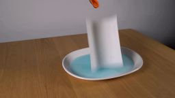
视觉工具实际返回图片 2
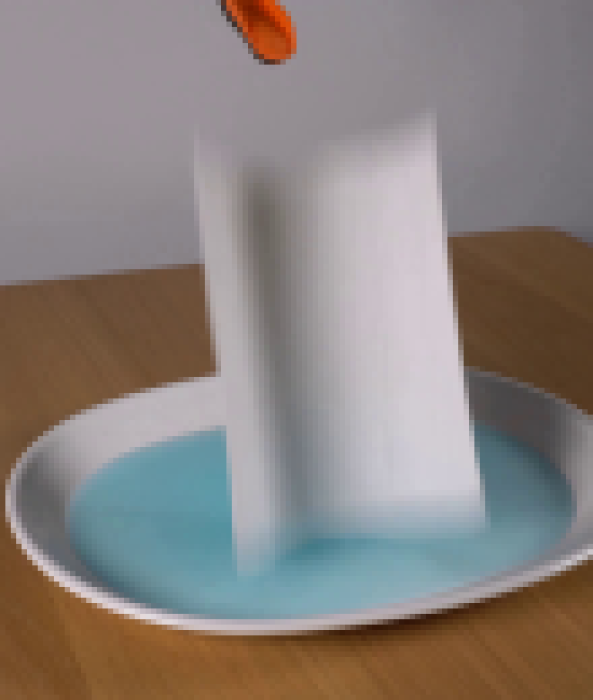
视觉工具实际返回图片 3
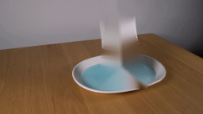
视觉工具实际返回图片 4
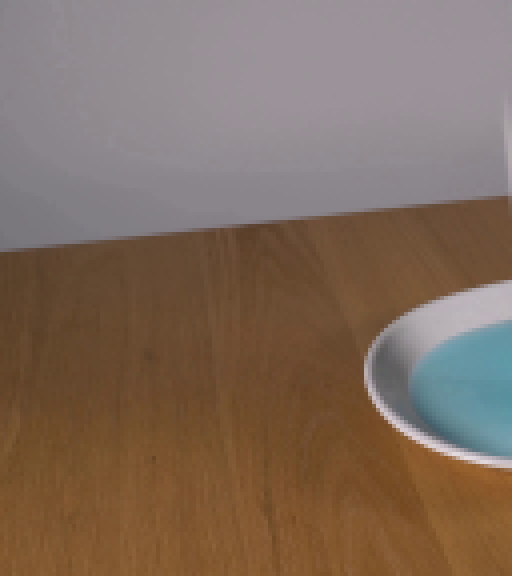
视觉工具实际返回图片 5
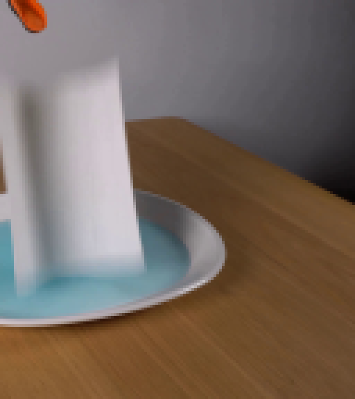
视觉工具实际返回图片 6
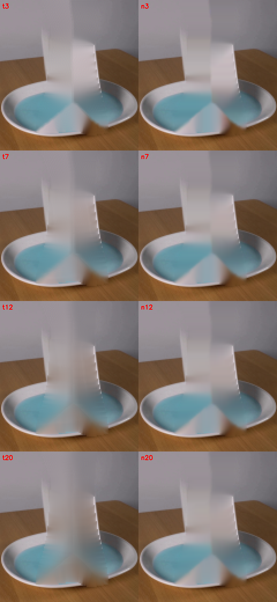
视觉工具实际返回图片 7
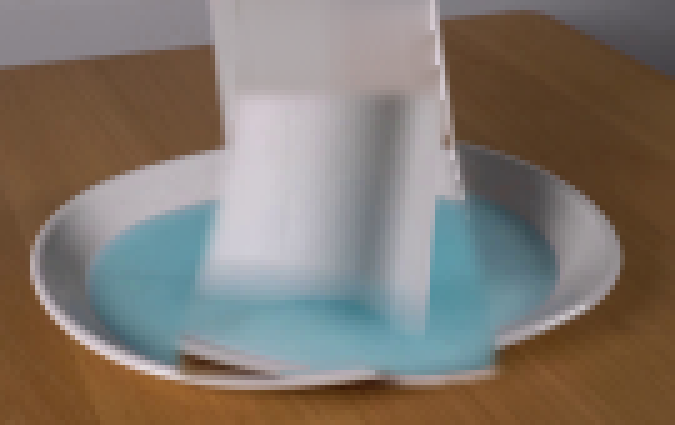
视觉工具实际返回图片 8
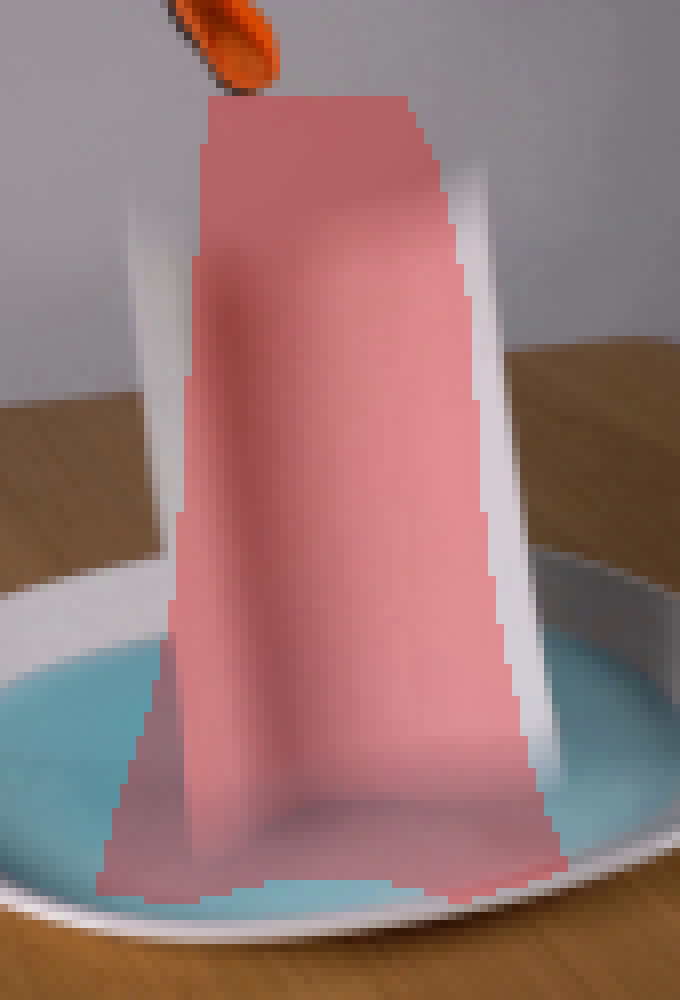
视觉工具实际返回图片 9
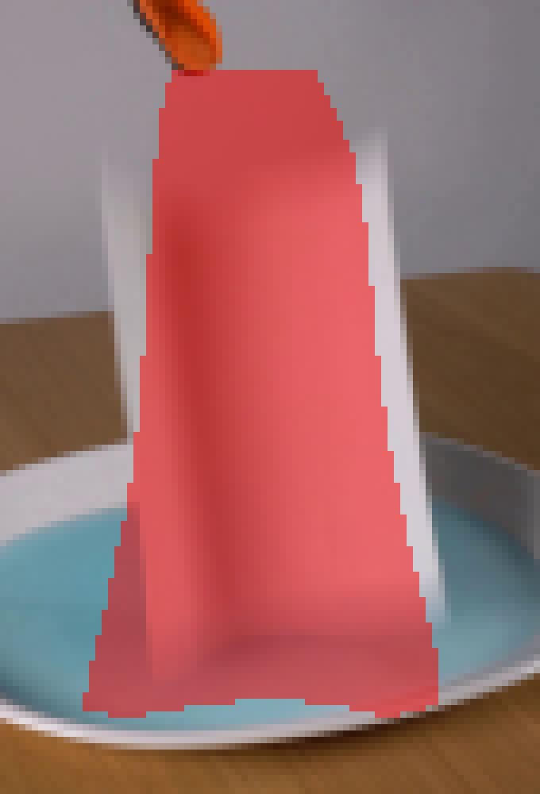
视觉工具实际返回图片 10
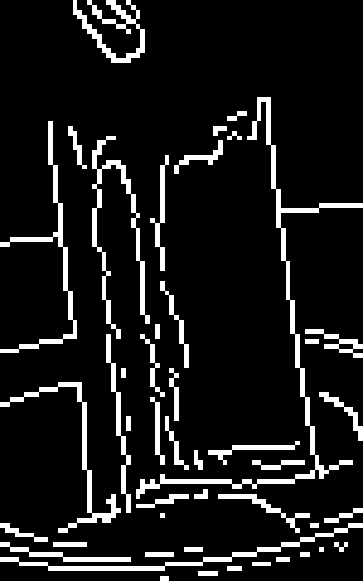
视觉工具实际返回图片 11
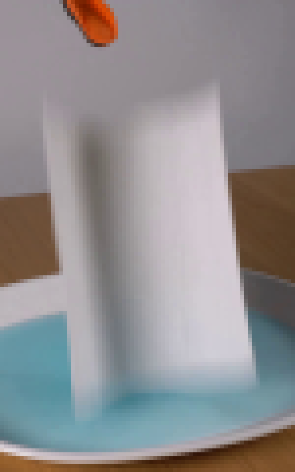
视觉工具实际返回图片 12
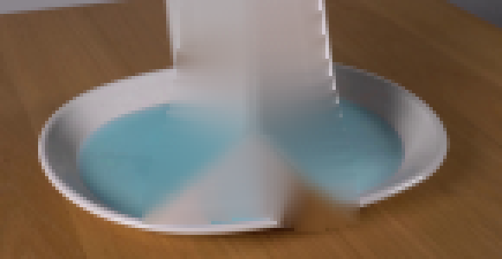
视觉工具实际返回图片 13
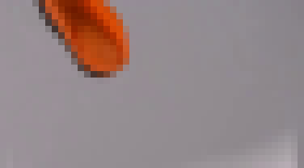
视觉工具实际返回图片 14
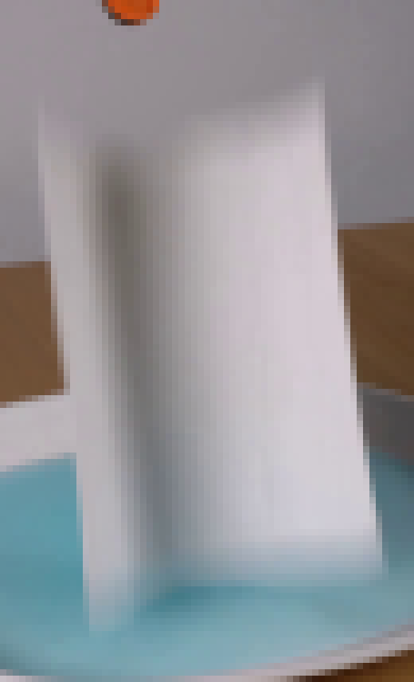
视觉工具实际返回图片 15

视觉工具实际返回图片 16

视觉工具实际返回图片 17
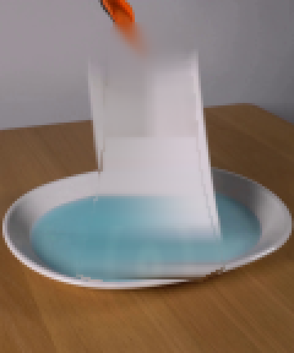
视觉工具实际返回图片 18
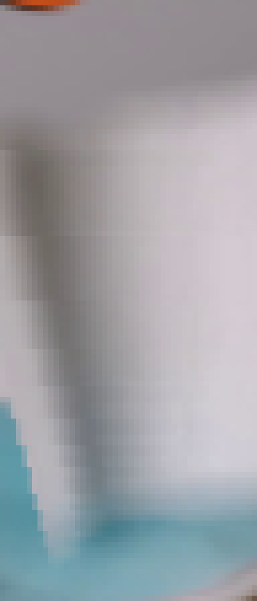
视觉工具实际返回图片 19
视觉工具实际返回图片 20
视觉工具实际返回图片 21
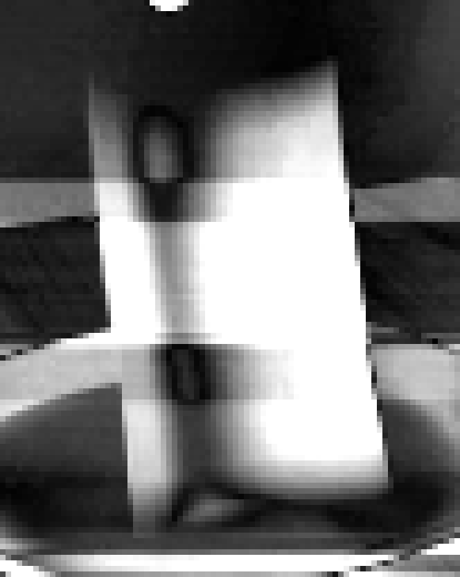
视觉工具实际返回图片 22
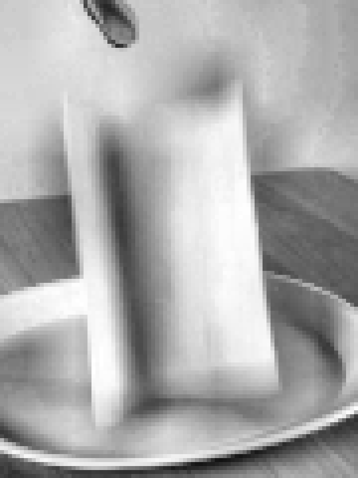
视觉工具实际返回图片 23
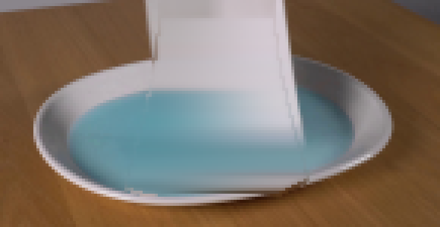
视觉工具实际返回图片 24
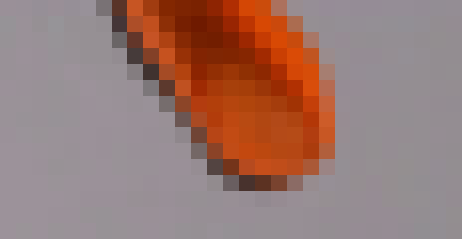
视觉工具实际返回图片 25
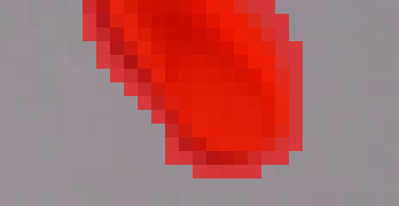
视觉工具实际返回图片 26
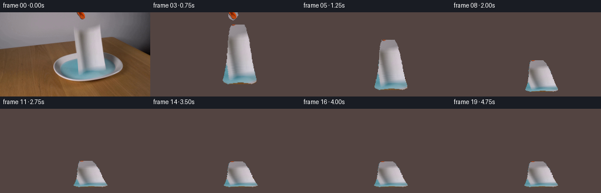
视觉工具实际返回图片 27
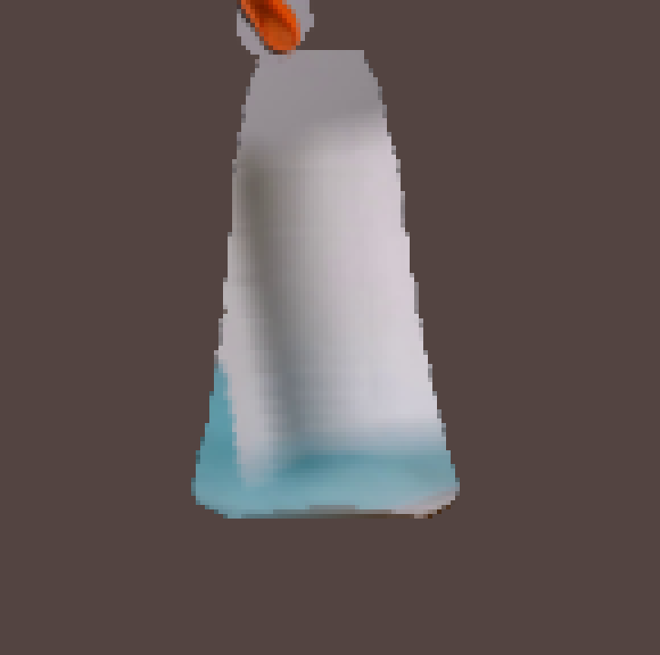
视觉工具实际返回图片 28
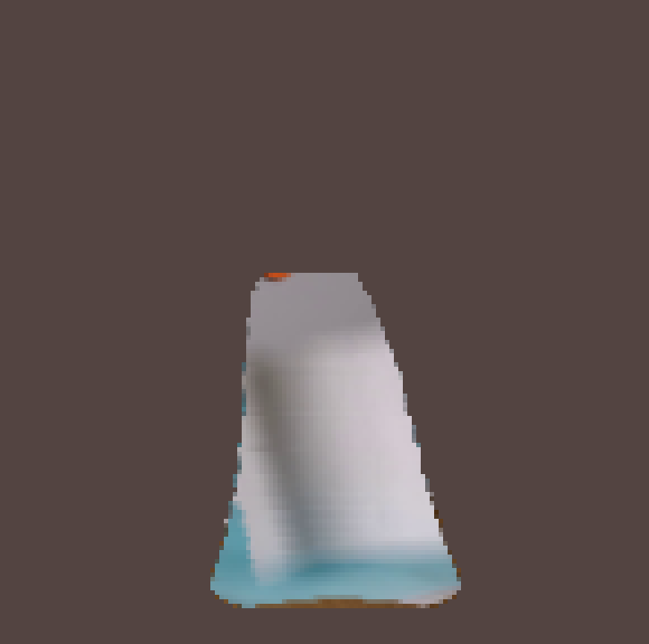
视觉工具实际返回图片 29
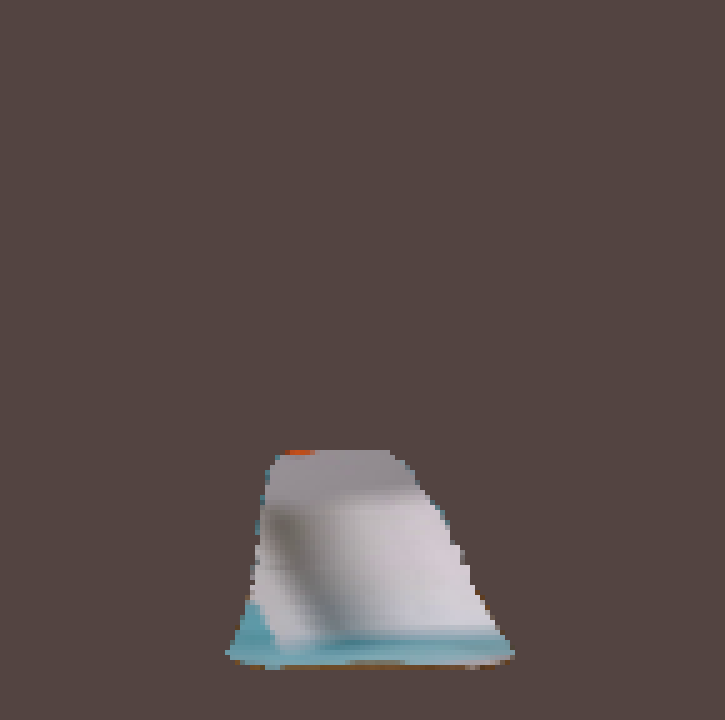
保存候选 2 份；完成命令 38 次；可验证图片返回 29 张。原始 API 响应与完整日志保留在本地。